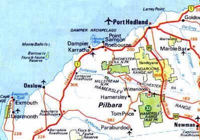

The Tom Bearden
Website
|
Continued BRIGHT SKIES BY HARRY MASON NEXUS Magazine
 In mid October 1994 a family were having a patio barbecue at about 8.30pm at night. They saw a very large red-orange colored ball of fire moving at very low altitude directly towards them at a steady slow light aircraft speed (<100mph ?)and 300 meters altitude. It was bigger than the moon in apparent size. They rang the local police alerting them to a possible aircraft on fire. The two police raced outside to watch. By now many of the towns folk (population some four thousand) were outside watching the fireball. From front on it appeared to be a fiery orange-yellow-white color - possibly rectangular or spherical in cross section (depending on observer), from the side it appeared to be a spherical yellow-white light - pulsing up and down in light intensity (as captured on video). Our original barbecue observers, being some 200 meters directly below it by now, reported that it was an intense spherical ball of orange-red fire with the fire swirling in a spiral pattern and the flames disappearing internally upwards into a central black "hole" or void within the spherical mass of flames. The fireball had no tail and made no noise at all - there was no ground seismic wave as experienced in many other recent Australian fireball events. It was described as a sort of "implosion ball of flames" with all the fire or flames originating in local space outside the fiery sphere-like form, the flames being sucked into the center where they disappeared - "like a moving plasma ball in a local space-time warp around a central black hole" - "Never ever seen anything like it before - therefore difficult to describe accurately". Really aware people these outback mining families - a scientist could not have done better !!! The fireball took about 5 minutes to cover the distance from a line of hills west of Tom Price to a line of hills to their east. At this point it flashed a bright blue-white color that lit up the area and it then took off at very high speed and disappeared almost instantly moving very fast to the east. Other observers simply believed that it just disappeared with the intense blue-white light flash/explosion - no explosive noise heard - just a very bright light energy emission flash. The observers turned around to look back to the west. Immediately a second fireball appeared in the west following the path of the first. This flew slightly lower but at the same slow light aircraft speed (i.e. about 100 mph) and similarly at constant low altitude. Again it flew directly over the barbecue observers and was identical in all respects to the first. It disappeared similarly in a massive blue-white flash of light energy moving at very high velocity to the east. This was followed by a third fireball following the exact same low level (nearly in the tree tops), exact same size, exact same slow flight speed, exact same course, same flash of light followed by it's disappearance at high speed to the east. The time between each separate fireball "pulse" appearing was almost identical and after one disappeared to the east as you swung around to look west another arrived - like clockwork. There remains a difference of opinion between observers as to exactly how many fireballs were seen in the sequence that night. All observers agree that two were seen, but several claim that three were actually seen - but that strange time/space/mind distortion effects were in operation (emanating from the fireballs) such that confusion reigned immediately during and after the sightings which led to disagreement and argument over the number of discrete fireball events. These entire events -or parts thereof - were seen by many of the inhabitants of Tom Price i.e. probably over a thousand people. Many attempted to take photos but all film rolls returned from Perth showed good family snaps but only white blanks of the fireballs. The films were developed by friends and were not tampered with, suggesting that X-ray or similar e/m radiation from the fireball fogged the film by concentration through the camera lens ? One video camera tape was taken but later accidental over-recording led to only two minutes of this incident remaining - taped as a pulsing light or fireball, as seen from well south of the fireball track - this has since been appropriated by a NSW UFO researcher and has never since seen the light of day. All residents were shocked by what they observed, eventually believing that someone deliberately wanted them to see these fireballs as some sort of test over an isolated outback town. They confirm that there appeared to be no solid mass object when seen close up, but from a distance many thought they were seeing an aircraft on fire - the second and third fireballs disabused them of this idea. No one could align their sighting with anything within their experiential memory. Some thought that "it was like the end of the world". The two police were taken the next day to a point half way to the Paraburdoo town site (Residents here also saw the fireballs to their north that night) - located some 50km south of Tom Price. The police were briefed by officials on what had occurred and thereafter refused to discuss the evenings events. Being a small town with few inhabitants and pretty lonely if the other residents cold shoulder you one policeman later admitted that he would like to say what it was all about but had been ordered to keep his mouth shut and it was more than his job and life were worth to say more. The residents of Tom Price discussed these events for days, but attempts to go public on Perth TV were met with last minute cancellation amid ridicule and loony epithets - after Channel 7 actually paid airfares for two resident eye-witnesses to fly to Perth. Many residents had noticed that the fireballs had flown from the direction of the Exmouth Peninsular US "Radio Communications" base. Many suspect that there is a secret underground part to this base which contains large peculiar aerial systems at ground level. It was later found out that the Dampier power station (150km north of Tom Price) went off line at the time of the Tom Price fireballs due to a huge overvoltage pulse on the transmission lines. Residents of this district have commonly seen, or even been followed by bright white lights whilst traversing roads at night near the coast and the Exmouth base area. These lights move at low or high speed, at low or high altitude, and commonly alter course. Very bright white glows have been observed at night emanating from uninhabited bush land just to the east of Tom Price. Fireballs have been reported on several occasions in the period 1973 to 1994 as flying from Exmouth towards the east and the Great Sandy Desert. In this Tom Price fireball(s) incident we appear to have a possible direct link to a US base. Thus it is feasible that high powered E/M weapon systems are being tested by the USA on Australian soil - or possibly that foreign E/M systems, or off planet alien ufo, interest in the Exmouth USA base is being demonstrated by these sightings. Regular passage of three such slow speed fireballs, ultimately increasing rapidly to very high speed fireballs, occurring exactly at equal timed intervals, along the same very low altitude trajectory and course, cannot involve any normal meteor or bolide train event. These fireball events do not appear to represent any known natural phenomenon, and certainly appear to fit either the alien "UFO", secret military space plane test, or E/M weapons testing scenarios. Eyewitness information about the insides of the Exmouth Peninsular US "VLF Submarine Communication" base proves to be extremely interesting. The main Tx site consists of one central very high aerial called "Tower Zero" placed upon a low hill top and surrounded by 11 eqi-spaced smaller towers (each about 1000 ft. high), each tower is connected by aerial wire forming a series of three concentric circular loops (in excess of 3km diameter). Tower zero is encased in wood/asbestos sheeting to form a very high enclosed oblong box, it has a two man elevator running up the inside of the tower - the top inner aerial shape is surrounded by a larger enclosed box. The aerial array utilized enormous quantities of copper tube and wire "ground counterpoise" arrays buried in the ground under the entire complex. Access into the hill side tunnel opening takes one into a large (at least three story) underground section at the base of Tower Zero. Here is something like the innards of a giant "transistor radio" with a huge heavy duty copper wire coil some 50 feet high and 15 feet in diameter - all supported on hard wood (Jarrah) frames fixed with wooden (Jarrah) nuts and bolts !!! Sections are lined with stainless steel sheeting. There may be further and deeper sections under the copper coil which were not seen by this witness. There is a large power station (possibly running on gas from bore holes into a nearby large natural gas reservoir). Although officially recently handed over by the US Navy to Australian Navy control the base still has many US "consultants" who live in the nearby town of Exmouth. The Jarrah fittings and copper coil in Tower Zero were installed in 1968, after the main building contractor teams had left the facility. Supposedly this Exmouth Tx site is transmitting vlf or elf E/M radio messages to submarines. However this eyewitness description of the underground wooden frame and giant coil is a dead give away. It perfectly describes major elements of Tesla's Wardenclyffe, Long Island, and the earlier Colorado Springs research versions, Magnifying Energy Transmitters. The wooden construction is required to handle very high voltages and very high frequencies (possibly as high as microwave band frequencies) by containing the induced coil electrostatic wave from discharge to ground - it is NOT needed to handle very low frequencies (vlf), or extremely low frequencies (elf). Tesla claimed in 1908 that he could hit any antipodean planetary city with an enormous E/M energy pulse delivered in micro seconds that would "create an explosion equivalent to more than the power of the extant World navy's combined Dreadnought Battleship broadsides" (i.e. a huge force similar to that of a nuclear explosion) from just such a device. Therefore it would appear that the US Exmouth Tx site contains a "Tesla" or "scalar" E/M weapon system - which has been active since about 1969 ....... i.e. in time to conduct the 1970 and younger tests that we see evidence of due east of there in the Great Sandy Desert as many grid rows of 10km spaced earthquakes - looking like a chess board - each of 3 to 5 Richter power. In 1965 this section of the Great Sandy Desert area was (uniquely for Australia) covered by high altitude U2 aerial photography - paid for by the US government - why ??? In 1966 the French Oil company Aquitaine Oil (now called ELF ! Aquitaine) took out a large oil exploration permit in this most isolated and difficult to access area of Australia. Canberra even paid half the exploration costs to help explore the hinterland - no other company known to me got this type of deal - especially to explore an area of poor conceptual potential in a poor geological environment when many easier access and far better geological environments with excellent conceptual potential existed elsewhere in Australia and were open for acquisition and exploration. Aquitaine commenced exploration in 1967 and carried out aeromagnetic, ground gravity, seismic traverses, and ground VLF/ELF E/M studies (These E/M techniques being quite rare and odd exploration techniques for oil). In 1968/9 Australian Army MP's with 4wd. jeeps were airlifted in to the Great Sandy Desert to round up a couple of hundred nomadic Aboriginal tribes people and ship them out to Broome. This region was declared "OFF LIMITS TO THE PUBLIC" and all access tracks into the desert were guarded by military Police. The published reason was the danger from a series of test launches from Woomera in South Australia over the Great Sandy Desert and Broome of the British Blue Streak missiles, and of the European four stage space rocket satellite launching system - they even got this one into orbit eventually in early 1970 and 1971. Thereafter the British missile programme and the European space effort were rather mysteriously and suddenly closed down. In 1970 Aquitaine did no field work. In late March 1970 a series of concentrated 3.0-5.0 Richter earthquakes commenced in the eastern Great Sandy Desert (NB. none ever known previously since W.A. seismometers were installed in 1900 - also NO aboriginal racial memory of quakes in this region). These quakes stopped in early October 1970 only to recommence the following year again. Isolated quakes have continued every year since 1970. The late March to early October period each year is the only viable field period in this region - due to the extreme heat of +50 degrees Centigrade in the months of November - February. In 1972/3 Aquitaine drilled two deep stratigraphic oil wells (both dry) and walked away from the permit. Their annual exploration work reports (1966-1973) should be on "open-file" at the Perth WA Mines Dept. library - however they are listed as confidential. No copies exist in Perth and they are held under lock and key in Canberra at the AGSO (ex BMR) offices - this is unique in all my W.A. exploration experience. In 1973 the BMR published a report about the strange explosion of new earthquakes in the eastern Great Sandy Desert - this contained incorrect quake epicenter maps - apparently biased to NOT show the strange regular positioning of these quakes along a 10km x 10km spaced grid over some 80km x 70 km area - with a central 2km spaced series of quakes along two lines forming an apparently central "aiming point" cross. The 1996 AGSO Mundaring Observatory epicenter data demonstrates this regular quake epicenter pattern very well. The accuracy of epicenter determination is thought to be +/-10 km. Other Australian areas of dense quake distribution show chaotic elliptical area spreads - clustered statistically around central points - not regular grid lines of quakes marching through the desert. These quakes are not due to seismic explosives - unless they used several kilotons at each shot hole !!! The Great Sandy Desert earthquakes are distributed almost exactly due east of the Exmouth vlf Tx site, and intriguingly are also located upon a magnetic north pole great circle route from Exmouth's sister transmitter complex located at Cutler, Maine, on the north eastern seaboard of the USA near the Canadian border. Thus if the several sightings concerning fireballs emanating from Exmouth (reported during the period 1973 to 1994) to the east towards the Great Sandy Desert are taken into account it would appear that this area of Australia has been utilized for the testing and eventual deployment of a diabolical E/M weapons system of prodigious power. Slugs of E/M energy could have been fired from Exmouth and steered or explosively initiated from Cutler, and/or other US global transmitter sites onto the target test range within the Great Sandy Desert to initiate major earthquakes in a region previously and totally devoid of same. On a globe one can see that the great circle geographic polar route north from Exmouth passes through the following locations Hong Kong, Thule (US Air Base in Greenland), Cutler - Main = known vlf Tx, Arecibo - Puerto Rico = known vlf Tx, Tucuman - Argentina = known vlf Tx, Palmer and Amundsen-Scott US Antarctic bases, back to Exmouth Tx in NW Australia. Such a series of Tx sites would allow good coverage of the entire planet. Interestingly the Puerto Rico site is a near exact antipodean site for Exmouth, and both sites are common UFO sighting areas - especially Arecibo - which I suspect are mainly atmospheric Tesla light energy emission "ufo's" created by the testing and operations of both Tx E/M weapon sites pumping scalar E/M waves through the planet's core. There are many fascinating co-incidences in this research. Take for instance the case of Harold E Holt, Prime-minister of Australia from 26-01-1966 to 19-12-67. Holt disappeared whilst swimming one Sunday - apparently after reporting to family and close colleagues over the preceding days that he had discovered something about the USA, and their activities here in Australia, and their future intentions, that deeply offended and worried him. Intending to raise these issues in Cabinet, followed by Parliament on the following Monday, after his swim on the Sunday he was never seen again. The body was never found. Imagine something like that happening to Clinton, Reagan, Nixon, LBJ, or say Margaret Thatcher, Harold Wilson, Harold McMillan - don't you think demand for answers would keep being heard in the Australian/World Press ??? Whereas in fact the case of Harold E. Holt is rarely raised in the Press at all. Rumors of either CIA assassination, shark attack, heart attack, or best of all - removal by Chinese submarine !!!, have surfaced at intervals over the years. Recent rumor lines even suggest that Holt is alive and well in China .......... The Exmouth peninsular communications base is now called the "Harold E. Holt" Naval Communication Station ........... Obviously in honor of the man - but why ??? One would think that our Australian Federal Police or ASIO/ASIS could have solved the disappearance, and/or possible murder, of an Australian Prime-Minister in some 30 years - you do not have to look too far for a connection and possible line of inquiry .......... It is quite feasible that Holt found out about the true reasons behind the establishment of the US Navy Exmouth Tx site and objected strongly to Australian soil being utilized for such a horrendous weapon system base. Was he silenced to allow the US Navy controlled project to proceed ??? Was the base eventually named after Holt - (when recently officially "taken over" from the US Navy by the Royal Australian Navy) - as some sort of perverse honor to the very man who died trying to prevent it's installation on Australian soil ? Then there is the case of the two young cattle station hands who died under very mysterious circumstances a few years ago in the Great Sandy Desert - south of Halls Creek - on the very seismic grid lines put in there in 1968 by Aquitaine Oil - and within the center of the Great Sandy Desert earthquake "test range"............ It would appear to be high time for Australians to do something about this state of affairs - since we appear to actually host a weapon system that has probably led clandestinely to the death of not only Australians - but quite probably many tens of thousands of our fellow humans - in several countries across the Globe. It appears that this system was utilized to create induced quakes in various parts of Russia, Japan, China, Iran, and also allowed the delivery of violent weather storms to North Korea that have inflicted famine and near total decimation of 50% of her agricultural land. But all of that, the science of earthquake inducing E/M weapons systems, and their recent deployment and use on planet Earth must await the next articles in this three part series.
|